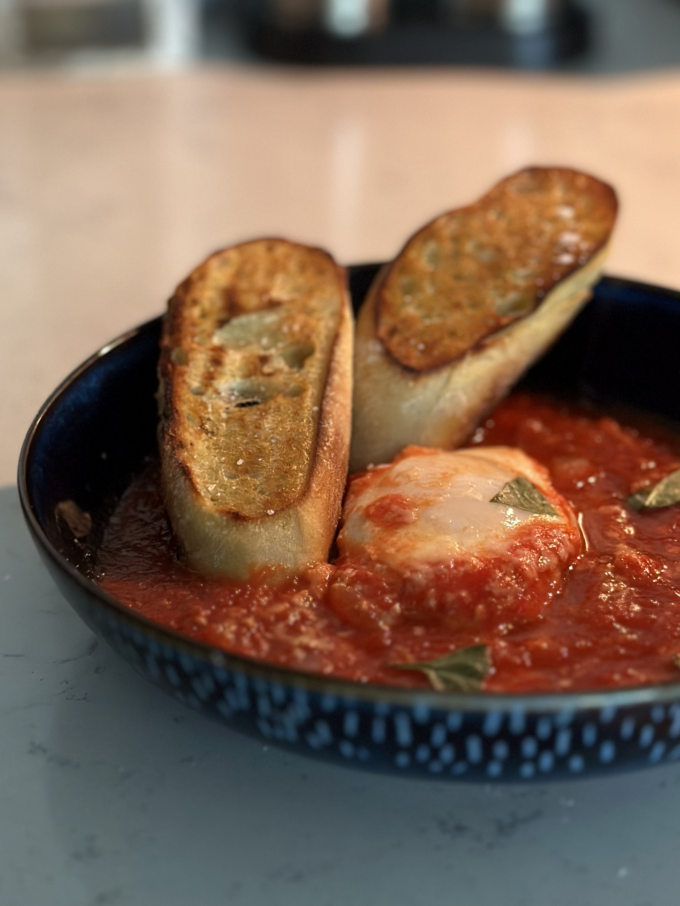
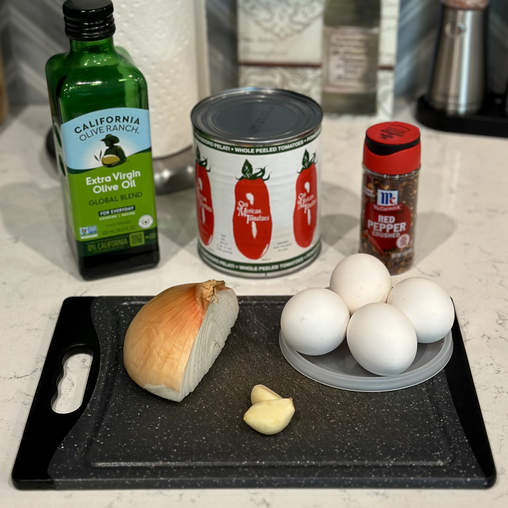
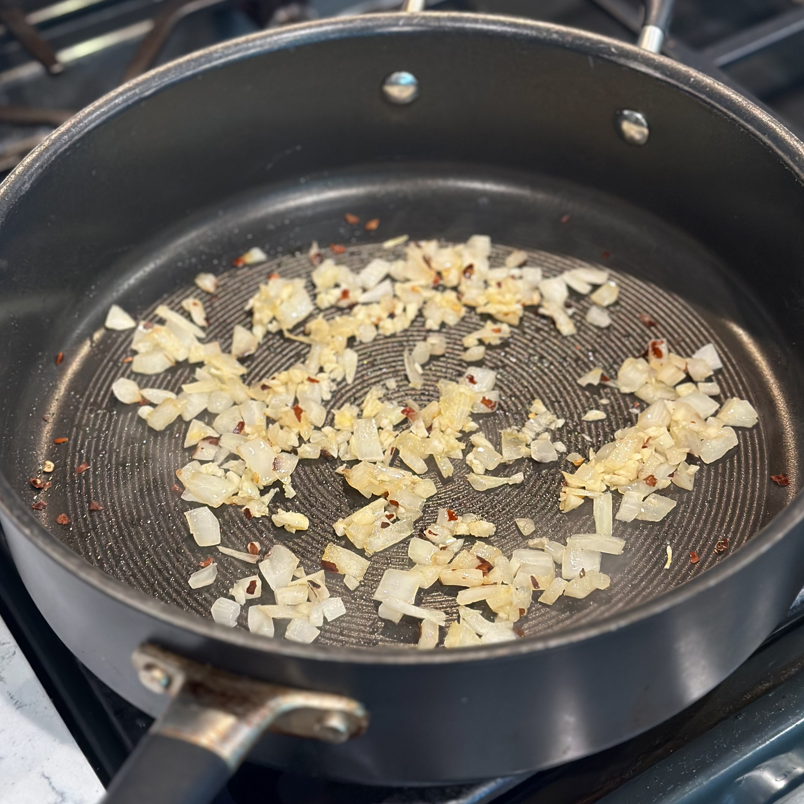
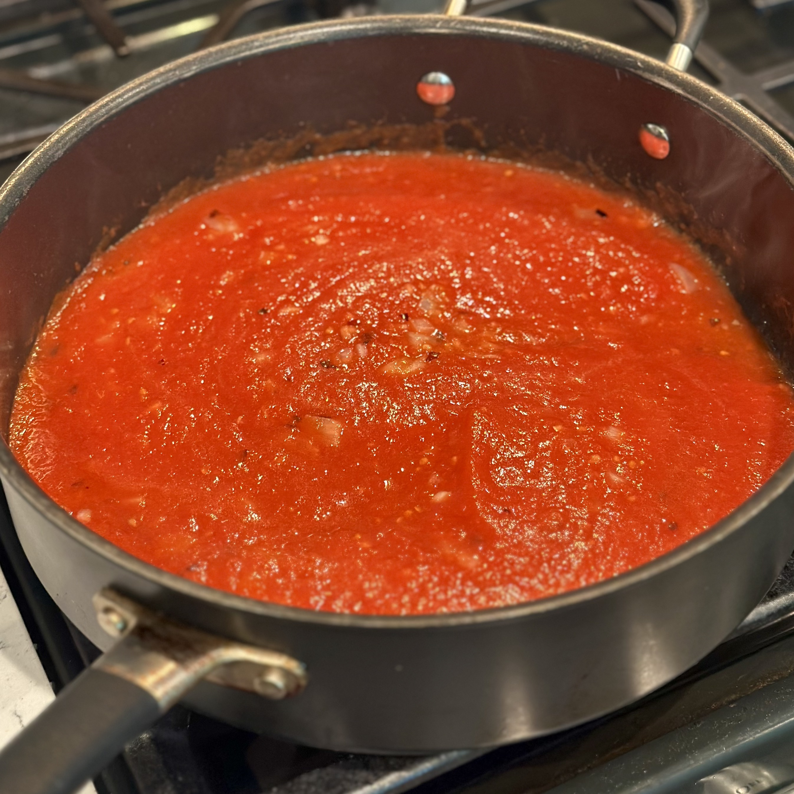
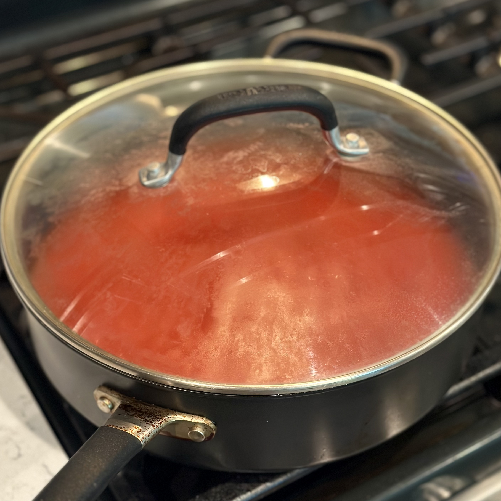
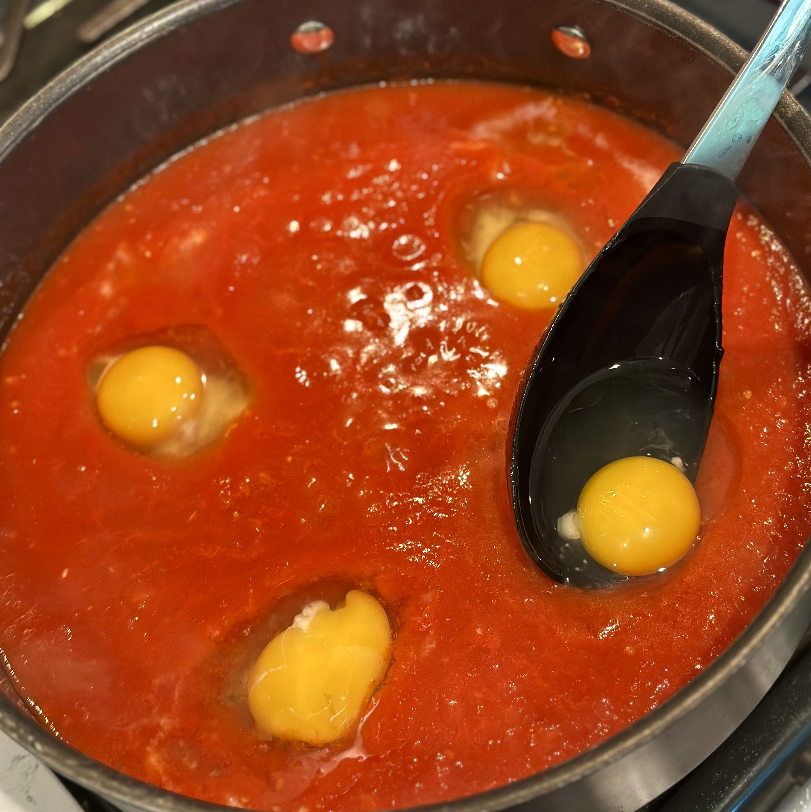
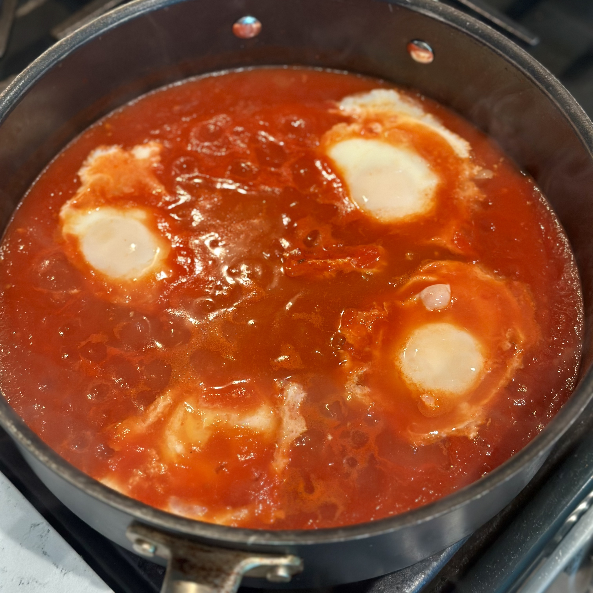

Uova al purgatorio.

Uova al purgatorio served with bread.
Overview
What are uova al purgatorio?
Uova al purgatorio, or "eggs in purgatory," are a traditional Neapolitan dish consisting of eggs cooked directly in tomato sauce. The sauce is generally prepared with simple ingredients such as tomatoes, olive oil, garlic, onion, and herbs or red pepper. Small wells are made in the simmering sauce and the eggs are cooked inside until the whites have set while the yolks remain soft. The dish is commonly served hot with bread, which can be used to soak up the tomato sauce and egg yolks.
Origin and History
Uova al purgatorio are associated with the cuisine of Naples and the surrounding Campania region. Like many traditional dishes, their exact origin is difficult to establish, but the dish dates back to at least the nineteenth century. The dish appears in Ippolito Cavalcanti's nineteenth-century cookbook Cucina teorico-pratica, an important early record of Neapolitan cooking.
The dish is characteristic of the simple and economical side of Neapolitan cuisine. Eggs could be combined with tomato sauce to create a substantial meal from relatively few ingredients, and leftover sauce or ragù could also be reused by cooking eggs directly in it. Modern preparations commonly use a simple tomato sauce instead.
What's in a Name?
The unusual name of the dish comes from religious imagery surrounding purgatory. In Catholic tradition, purgatory is a state of purification for souls before entering heaven. Devotion to the souls in purgatory became particularly important in Naples, where representations of these souls can be found in churches, shrines, and other religious imagery.
The appearance of the finished dish resembles these traditional representations. The white eggs emerging from the surrounding red tomato sauce are compared to souls rising from the flames of purgatory. In Neapolitan, the dish is also known as ova 'mpriatorio.
Similar Dishes Around the World
The combination of eggs and cooked tomatoes appears in many cuisines around the world. Perhaps the best-known comparison is shakshuka, a North African dish of eggs poached in a tomato and pepper sauce, commonly seasoned with spices such as cumin and paprika. In Turkey, menemen combines eggs with tomatoes and peppers, although the eggs are generally scrambled into the vegetables rather than left whole.
Similar dishes can also be found elsewhere in the Mediterranean. Portuguese tomatada consists of tomatoes cooked down with ingredients such as onion and garlic, often with eggs added to the sauce. In Spain, huevos a la flamenca bake eggs with tomatoes and vegetables, frequently alongside ingredients such as peas, peppers, potatoes, or cured meats.
The combination extends well beyond the Mediterranean. Mexican huevos rancheros pair fried eggs with a cooked tomato and chile sauce, while Chinese tomato and egg stir-fry combines scrambled eggs with stir-fried tomatoes. Although these dishes differ considerably in ingredients, preparation, and cultural background, they demonstrate how the relatively simple combination of eggs and tomatoes has developed independently into many distinctive dishes around the world.
Recipe
Ingredients
- 1/4 yellow onion, diced
- 2 cloves garlic, minced
- 1/2 tsp crushed red pepper
- 800 g tomato purée[1]
- Salt and pepper, to taste
- 4 large eggs
- Parmigiano or Pecorino cheese, to finish
Directions
- To a lightly oiled pan, add the onion and crushed red pepper and sweat until the onion turns translucent. Stir in the garlic and cook until fragrant.
- Add the tomato purée and simmer, covered, for 8-10 minutes.
- Taste the tomatoes and add salt and black pepper as needed.
- Crack an egg into a large spoon, use the bottom of the spoon to create a well in the tomatoes, and pour the egg into the well.[2] Repeat with the rest of the eggs. Cover and simmer until the egg whites have cooked but the yolks are still runny.
- Finish with Parmigiano or Pecorino cheese and olive oil. Serve hot with toasted bread.
Notes
- Any tomato purée will work. I like to blend a can of San Marzano tomatoes, but you can use any tomatoes you like or have on hand.
- If you notice that it is difficult to create a well for your eggs, try letting the tomatoes simmer for a few more minutes to thicken and try again.






See Also
 American-Style Pancakes & Waffles
American-Style Pancakes & Waffles
References
- Burri, Giancarlo. “Inferno, Purgatorio e Paradiso.” Civiltà della Tavola, no. 367, Feb. 2024, pp. 23-25. Accademia Italiana della Cucina, accademiaitalianadellacucina.it/sites/default/files/allegati/CDT_367_feb_2024_ITA.pdf. Accessed 12 Sept. 2026.
- Marino, Valentina. “Cosa sono le uova al purgatorio, il piatto napoletano che chiede una scarpetta generosa.” Gambero Rosso, 2 Mar. 2026, gamberorosso.it/notizie/rubriche/storie/uova-al-purgatorio-cucina-napoletana/. Accessed 12 Sept. 2026.
- Soprintendenza Archeologia, Belle Arti e Paesaggio per il Comune di Napoli. “Elenco ragionato dei principali beni di interesse demoetnoantropologico della città di Napoli.” Ministero della Cultura, sabap.na.it/elenco-ragionato-dei-principali-beni-di-interesse-demoetnoantropologico-della-citta-di-napoli/. Accessed 12 Sept. 2026.